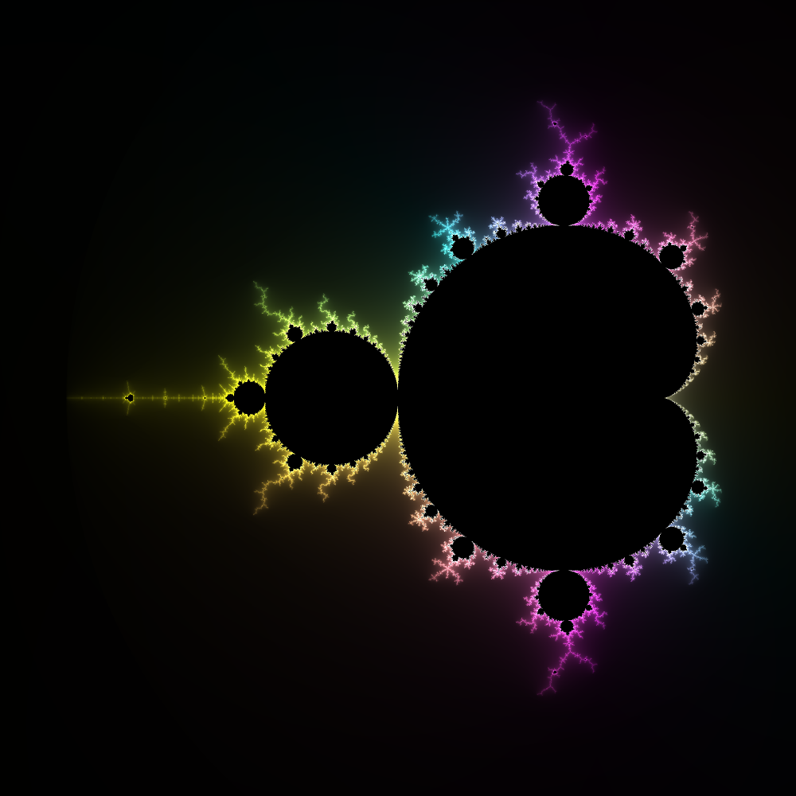

Julia Set Explorer
Hover over the Mandelbrot set to preview the corresponding Julia set. Click to generate a higher-resolution image (can take a little while on slower hardware). For more information on Mandelbrot and Julia sets, have a look at
this blog post
.
